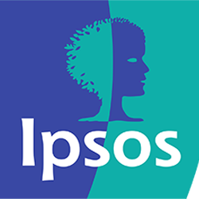

<!-- One -->
<section id="one">
	<div class="inner">
	Hi! My name is Jingjing. I am an aspiring data analyst who is interested in marketing technology and predictive analytics. I am currently in the Master of Science in Business Analytics Program at the University of Notre Dame to take my analytical ability and business sense to the next level. I excel in data visualization, with several experience of developing dashboards and reports for companies such as GroupM and Ipsos. Besides analytics, I am an avid painter, hiker, photographer and self-claimed le-cordon-bleu chef :)
<br>
<br>
<p><center><a href="../assets/CV.pdf" class="button icon fa-download" target="_blank">Download CV</a></center></p>
<br>
<br>		
<!-- Content -->
<div id="Education">
<header class="major">
<h2>Education</h2>
</header>
				<table style="width:100%">
					<tr style="padding:1Rem">
						<td style="vertical-align: middle; display:block; marigin:0 auto"></td>
						<td style="text-align:center; vertical-align: middle"><b>Master of Science in Business Analytics</b><br>
						August 2022 -  Present<br><i>University of Notre Dame, United States</i></td> 
					</tr>
					<tr style="padding:1Rem">
						<td style="vertical-align: middle; display:block; marigin:0 auto"></td>
						<td style="text-align:center; vertical-align: middle"><b>Economics and Management</b><br>
						September 2021 -  January 2022<br><i>University of Amsterdam, Netherlands</i></td> 
					</tr>
					<tr style="padding:1Rem">
						<td style="vertical-align: middle; display:block; marigin:0 auto"></td>
						<td style="text-align:center; vertical-align: middle"><b>Economics and Management</b><br>
						September 2018 -  June 2022<br><i>Southwestern University of Finance and Economics, China</i></td> 
					</tr>										
				</table>
</div>
<div id="WorkExperience">
<header class="major">
<h2>Work Experience</h2>
</header>
				<table style="width:100%">
					<tr>
						<td style="vertical-align: middle; display:block; marigin:0 auto"></td>
						<td style="text-align:center; vertical-align: middle"><b>GroupM</b><br>
						August 2022 -  Present<br><i>Programmatic Advertising Intern</i></td> 
					</tr>
					<tr>
						<td style="vertical-align: middle; display:block; marigin:0 auto"></td>
						<td style="text-align:center; vertical-align: middle"><b>Ipsos Group</b><br>
						September 2021 -  January 2022<br><i>Social Intelligence & Analytics Intern</i></td> 
					</tr>					
				</table>
</div>		

<header class="major">
<h2>Skills</h2>
</header>
		<ul class="alt">
			<li><b>Business Intelligence:</b> Tableau, Power BI</li>
			<li><b>Programming Languages:</b> Python, R</li>
			<li><b>Databases:</b> SQL </li>

<br>		

    {% include instagram.html %}
	
